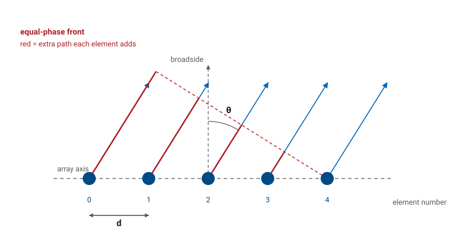
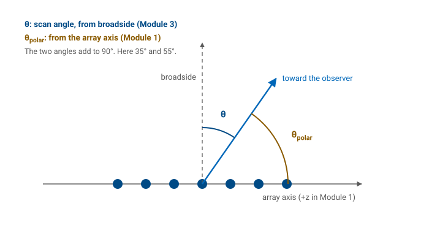
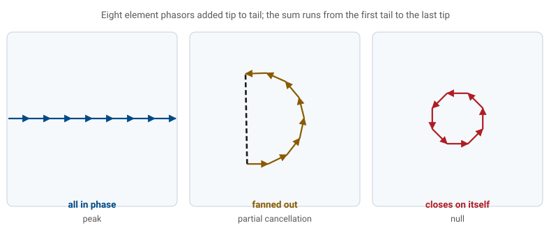
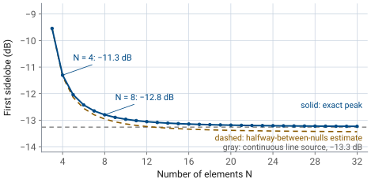
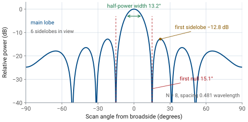
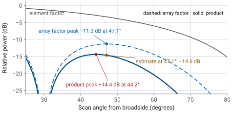
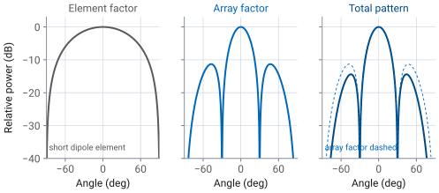
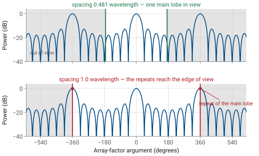
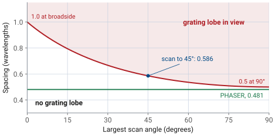
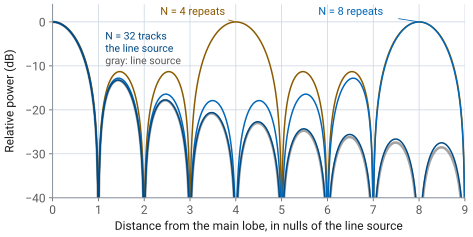

L16 - The Array Factor and Pattern Multiplication#
The Array Factor and Pattern Multiplication
The sum of the element phasors collapses into one compact expression, the array factor.
Lesson 16 · Antennas, Phased Arrays, and Radar Systems · Dr. Neil Rogers
Slides
Learning Objectives
- I can derive the array factor for an arbitrary linear array and apply pattern multiplication.
From Apertures to Elements
In Lesson 15’s continuous aperture, length set the beamwidth and taper set the sidelobes.
The PHASER has 8 patches in a row, not a continuous aperture.
Their phasor sum, the array factor, predicts every pattern this module measures.
Lesson 15 treated an aperture as a continuous sheet of current and read its beamwidth from the aperture length and its sidelobes from the taper. Now we replace that continuous aperture with \(N\) discrete elements on a line, each fed its own copy of the signal. The far fields still add as phasors, so the same reasoning applies, and the sum collapses into one compact expression, the array factor, which predicts every feature you will measure on the PHASER for the rest of this module.
Part 1: The Linear Array
\(N\) identical elements on a line, spaced \(d\) apart.
We feed element \(n\) the complex weight \(a_n\).
Every element radiates the same pattern; only the weights and the positions differ.

We put \(N\) identical elements on a straight line, spaced a distance \(d\) apart, and feed element \(n\) a copy of the same signal with complex weight \(a_n\). Every element radiates the same pattern; only the weights and the positions differ.
The Scan Angle
Module 3 measures \(\theta\) from broadside, as the PHASER GUI does.
Lesson 6’s \(k_z = k\cos\theta_{\text{polar}}\) becomes \(k\sin\theta\).
Broadside moves from \(\theta_{\text{polar}} = 90^\circ\) to \(\theta = 0\).

Module 3 measures the scan angle \(\theta\) from broadside, the direction perpendicular to the array face, with \(-90^\circ \le \theta \le +90^\circ\). Every PHASER plot, the GUI’s angle axis, and the phased-array literature use this convention.
Module 1 measured the polar angle from the \(+z\) axis for a line source lying on \(z\). The two are the same picture read from different reference directions, so the space frequency \(k_z = k\cos\theta_{\text{polar}}\) of Lesson 6 becomes \(k\sin\theta\) here. Broadside, which was \(\theta_{\text{polar}} = 90^\circ\), is now \(\theta = 0\). This is the only place in the course the two conventions are set side by side; from here on \(\theta\) means the scan angle.
Extra Path Length and Phase
The far-field rays are parallel, so only the projection of \(nd\) onto the look direction matters.
Element \(n\) arrives carrying \(a_n\ e^{\ +jn\ kd\sin\theta}\) relative to element 0.
A far-field observer sees the array from a single direction, so the rays leaving the elements are parallel. Element \(n\) sits \(nd\) farther along the array axis than element 0, and along a ray heading off at angle \(\theta\) that position shortens the path to the observer by \(\Delta r_n = n\ d\sin\theta\). The wavenumber \(k = 2\pi/\lambda\) converts distance to phase, so a path shorter by \(\Delta r_n\) is a phase lead of \(k\ \Delta r_n\), and element \(n\) arrives at the observer carrying
relative to element 0.
The same path differences change the amplitude \(1/r\) by a negligible amount. The PHASER is \(112\ \text{mm}\) long, so its far field begins at \(2D^2/\lambda = 0.86\ \text{m}\) (Lesson 5). At a \(30\ \text{m}\) range, \(112\ \text{mm}\) of path changes \(1/r\) by less than \(0.4\%\), but it spans \(3.85\) wavelengths, or nearly \(1400^\circ\) of phase. This is the parallel-ray approximation of Lesson 6: we keep the path difference in the phase and drop it from the amplitude.
Superposition
Identical elements share \(E_0(\theta)\), so it factors out, and the array factor depends only on the element count, positions, and weights.
The total far field is the sum of the element fields, and because every element has the same pattern, the common factor \(E_0(\theta)\ e^{-jkr}/r\) comes out in front of the sum. The array factor \(AF(\theta)\) is the sum that remains. It depends only on how many elements there are, where they sit, and what weights we feed them. It does not depend on the type of element.
The Array Factor From the Radiation Vector
Lesson 6 computed the far field of a \(z\)-directed current from its radiation vector,
An array is a current that exists only at the element positions. If we model element \(n\) as a point source of strength \(a_n\) at \(z' = nd\), the current is \(I(z') = \sum a_n\ \delta(z' - nd)\), and the integral picks out one term per element:
The last line is \(AF(\theta)\). The phasor sum and the radiation integral give the same result: the array factor is Lesson 6’s space factor for a current made of \(N\) point samples. A real element replaces each point source with its own pattern, which is the element factor.
Steering Phase
\(\beta = kd\sin\theta_0\) steers the beam to \(\theta_0\); Lesson 18 derives it.
Today \(\theta_0 = 0\), so \(\psi = kd\sin\theta\).
If the weights carry a progressive phase \(\beta\) per element, that phase adds to the geometric term, and both collect into one argument \(\psi\). The ramp \(\beta = kd\sin\theta_0\) steers the beam to \(\theta_0\), and Lesson 18 derives it. For the rest of today \(\theta_0 = 0\) and \(\psi = kd\sin\theta\), so every result below is the broadside case.
Key Point: A Sum of Phasors
The array factor is a sum of unit phasors, one per element, whose phases advance by \(\psi\) from element to element. Every feature of the pattern comes from how those phasors line up.

Read the three cases from left to right. At \(\psi = 0\) every phasor points the same way and the sum is \(N\), the largest it can be. As \(\psi\) grows the chain fans out and the sum shortens. When the fan has turned through a full circle, \(N\psi = 2\pi\), the chain closes on itself and the sum is exactly zero. That is the first null, and the closed form below locates it for every \(N\).
Phasor Chain Explorer
The left panel draws the \(N\) element phasors tip to tail, with each one turned \(\psi\) from the last, and the navy arrow is their sum. The phase is referenced to the array center, so the sum always lies along the horizontal axis and points left where the array factor is negative. The right panel is \(\vert AF\vert\) against scan angle, with a marker at the current \(\theta\). Start at broadside, where the chain is straight and the sum is \(N\). Drag \(\theta\) slowly: the chain curls, the sum shortens, and at \(15.1^\circ\), where \(\psi = 45^\circ\) and \(N\psi = 360^\circ\), the chain closes into an octagon and the sum is zero. Keep going to \(21.9^\circ\) to find the first sidelobe, \(-12.8\) dB, where the chain has wound about one and a half turns.
Part 2: Uniform Excitation
With every \(a_n = 1\), the sum is a geometric series with ratio \(e^{\ j\psi}\).
Each bracket equals \(-2j\sin(\cdot)\), and the \(-2j\) factors cancel.
Setting every weight to 1 turns the sum into a finite geometric series in \(e^{\ j\psi}\). To close it, we factor half of each exponent out of the numerator and the denominator, which leaves a difference of conjugate exponentials in each bracket. Euler’s formula turns each bracket into \(-2j\sin(\cdot)\), and the \(-2j\) factors cancel between top and bottom.
The Closed Form
The leading exponential is the phase of the array center; referencing the phase to the center removes it.
Dividing by \(N\) sets the peak to 1.
The leading exponential is the phase of the array’s center relative to element 0. If we reference the phase to the center instead, it disappears. Dividing by \(N\) normalizes the peak to 1. The main lobe, the nulls, and the sidelobes all follow from this expression.
Main Lobe and Nulls
At \(\psi = 0\) the limit of \(0/0\) is 1, so the beam points at \(\theta_0\).
Nulls fall where the numerator vanishes and the denominator does not, \(m = 1, \ldots, N-1\).
The total length \(Nd\) sets the nulls, not \(d\) alone.
Main lobe. At \(\psi = 0\) both numerator and denominator vanish, and the limit is 1. The peak therefore sits where \(\sin\theta = \sin\theta_0\), which at broadside is \(\theta = 0\). The function is periodic in \(\psi\) with period \(2\pi\), so the peak repeats every \(2\pi\); Part 4 finds the spacing at which a repeat reaches a real angle.
Nulls. The numerator vanishes when \(N\psi/2 = m\pi\), and the denominator is nonzero as long as \(m\) is not a multiple of \(N\). The nulls depend on \(N\) and \(d\) only through the total length \(Nd\).
Sidelobes
\(N - 2\) sidelobes per period, one between each pair of nulls; the first is tallest.
The first peaks near \(N\psi/2 = 3\pi/2\), halfway between the first two nulls.

Between consecutive nulls the numerator swings back to \(\pm 1\), so a sidelobe sits in each gap: \(N - 2\) of them across one period. Their heights fall off as \(1/\sin(\psi/2)\), so the tallest is the one nearest the main lobe. The numerator reaches its peak magnitude halfway between its first two zeros, at \(N\psi/2 = 3\pi/2\), and evaluating \(AF_N\) there gives \(2/(3\pi) = 0.212\) for large \(N\), or \(-13.5\) dB.
The denominator is still growing across that gap, so the true peak sits slightly closer to the main lobe, where the denominator is smaller. Locating it exactly gives \(-13.3\) dB, which is the uniform line-source number from Lesson 6. At \(N = 8\) the value is \(-12.8\) dB. The figure plots the exact level against \(N\): a short array has a higher first sidelobe, and by \(N = 16\) the level is within \(0.2\) dB of the line source. The estimate runs a fraction of a decibel low at every \(N\), for the reason above. Uniform excitation leaves the first sidelobe about \(13\) dB below the peak in a discrete array, as it did in the continuous aperture of Lesson 15, and Lesson 24 lowers it with a taper.
The Eight-Element Array Factor

\(N = 8\), \(d/\lambda = 0.481\): half-power width \(13.2^\circ\), first null \(15.1^\circ\), first sidelobe \(-12.8\) dB.
Six sidelobes, \(N - 2\), sit between the nulls.
Reading the Closed Form
Feature |
Uniform array |
|---|---|
Main-lobe peak |
\(\theta = \theta_0\) |
Null \(m\) |
\(\sin\theta_m = \sin\theta_0 + m\lambda/Nd\) |
First-null beamwidth |
\(2\arcsin(\lambda/Nd)\) at broadside |
Half-power beamwidth |
\(\approx 0.886\ \lambda/(Nd\cos\theta_0)\) |
First sidelobe |
\(-13\) dB (\(-12.8\) dB at \(N = 8\)) |
Sidelobe count |
\(N - 2\) per period |
The half-power row uses the line-source constant of Lessons 6 and 15 with \(L = Nd\), and Lesson 20 derives it for the array, along with the \(1/\cos\theta_0\) broadening under steering. The constant is close but not exact for a short array: the PHASER’s exact half-power width is \(13.3^\circ\), against \(13.2^\circ\) from \(0.886\ \lambda/Nd\).
Part 3: Pattern Multiplication
Requires identical, identically oriented elements, so \(E_0(\theta)\) factors out of the sum.
In decibels the two patterns add.
This is Lesson 6’s element factor times space factor, with a sum in place of the integral.
Nothing in Part 1 required the elements to be isotropic. It required them to be identical and identically oriented, which let \(E_0(\theta)\) come out of the sum. That factoring is pattern multiplication.
The element factor \(EF\) is the pattern one element would produce by itself. The array factor \(AF\) is what the arrangement adds. Their product is the array’s pattern. In decibels the two curves add, which is why a log plot is the natural place to check the result.
This is the Lesson 6 split, pattern equals element factor times space factor, with the continuous space factor replaced by a discrete sum. The element factor comes from the physics of the radiator; the array factor accounts for where the elements sit and how we feed them.
Worked Example: Four Short Dipoles
Four collinear short dipoles, \(d = \lambda/2\), fed in phase; \(EF = \cos\theta\).
\(AF_4\) first sidelobe: \(-11.3\) dB at \(47.1^\circ\), where the element adds \(-3.3\) dB.
Total first sidelobe: \(-14.4\) dB at \(44.2^\circ\). The main lobe narrows only from \(26.3^\circ\) to \(25.4^\circ\).
Worked example — four collinear short dipoles
Four short dipoles lie end to end along the array axis, spaced \(d = \lambda/2\), all fed in phase.
Lesson 7’s short dipole radiates as \(\sin\theta_{\text{polar}}\), which in scan angle is \(EF(\theta) = \cos\theta\): a broad lobe at broadside and a null along the array axis at \(\theta = \pm 90^\circ\).
The array factor is \(AF_4\) with \(\psi = \pi\sin\theta\). Its nulls fall at \(\sin\theta_m = m/2\), that is \(\pm 30^\circ\) and \(\pm 90^\circ\), and its first sidelobe is \(-11.3\) dB at \(\theta = \pm 47.1^\circ\).
At that angle the element factor is \(\cos(47.1^\circ) = 0.681\), or \(-3.3\) dB. Adding the two levels in decibels estimates the total first sidelobe:
The product’s own peak sits slightly closer to broadside, at \(44.2^\circ\), because the cosine is larger there, and its exact level is \(-14.4\) dB. The estimate is within \(0.2\) dB.
The element factor did two things: it pushed the sidelobes down, more so the farther off broadside they sit, and it deepened the null at \(\pm 90^\circ\) that the array factor already had. It changed the main lobe very little, because \(\cos\theta\) is flat near broadside: at the \(\pm 13.2^\circ\) half-power edges of the array factor it is still \(0.974\), or \(-0.23\) dB, so the half-power width narrows only from \(26.3^\circ\) to \(25.4^\circ\).
The figure zooms in on that sidelobe. Adding the two levels at the array factor’s peak gives the amber point on the product curve; the product’s own peak, in red, sits \(3^\circ\) closer to broadside and \(0.2\) dB higher, because the array factor is flat at its own peak while the element factor keeps rising toward broadside.

Element Factor Times Array Factor

The element factor lowers the wide-angle lobes.
The array factor sets the main-lobe width.
That last observation generalizes. A directive element reshapes the skirts of the pattern and suppresses whatever the array factor puts at wide angles, but the main lobe belongs to the array. The array factor sets the beamwidth, and the element and the array share the wide-angle behavior.
Array Factor Builder
The widget below builds the array factor one control at a time. Start at the course array, \(N = 8\) and \(d/\lambda = 0.481\), and confirm the readouts against the closed-form table: half-power width \(13.2^\circ\), first null \(15.1^\circ\), first sidelobe \(-12.8\) dB. Then sweep \(N\) and watch the beam narrow while the sidelobe level holds near \(-13\) dB, since \(N\) sets the width and the shape of the excitation sets the sidelobes. Switch the element factor on to see pattern multiplication: the dashed \(\cos\theta\) envelope pulls the outer lobes down and leaves the main lobe alone. Then push \(d/\lambda\) toward 1.5 and watch a second full-height beam move in from the edge; Part 4 explains it.
Part 4: The Visible Region
Real angles reach only \(\psi_{\min}\) to \(\psi_{\max}\), the visible region.
Its width is \(2kd = 4\pi d/\lambda\); steering slides it without resizing it.
A second peak at \(\psi = \pm 2\pi\) radiates once the window reaches it.
\(AF_N(\psi)\) repeats every \(2\pi\) in \(\psi\), but \(\psi\) is not free: \(\psi = kd(\sin\theta - \sin\theta_0)\) ties it to a real angle. As \(\theta\) sweeps the visible half-space from \(-90^\circ\) to \(+90^\circ\), \(\sin\theta\) covers \(-1\) to \(+1\), and \(\psi\) covers a window of total width \(2kd = 4\pi d/\lambda\) that slides as we steer. That window is the visible region. Values of \(\psi\) outside it correspond to no real angle, so the array never radiates them.
The width of the window alone does not produce a second beam. At \(d = \lambda/2\) the window is exactly one period wide, and at broadside it runs from \(-\pi\) to \(+\pi\), between the repeats. A second copy of the main lobe appears only when an edge of the window reaches a repeat at \(\psi = \pm 2\pi\). At broadside the edges sit at \(\pm kd\), which reach \(\pm 2\pi\) when \(d = \lambda\). A copy that enters is a grating lobe, and because \(AF_N\) is exactly periodic it is as tall as the main lobe and radiates as much power as the intended beam.
Visible Region at Two Spacings

\(d/\lambda = 0.481\): the window ends at \(\pm 173^\circ\), short of the repeats at \(\pm 360^\circ\).
\(d = \lambda\): the edges reach \(\pm 360^\circ\), and full-height lobes appear at \(\pm 90^\circ\).
Visible Region Explorer
The top panel plots \(AF_N\) against \(\psi\) over several periods and shades the window that real angles reach; the bottom panel is the same pattern against scan angle. Start at the PHASER, \(d/\lambda = 0.481\), where the window spans \(\pm 173^\circ\) and stops short of the repeats at \(\pm 360^\circ\). Widen the spacing and watch the window grow until its edges reach \(\pm 360^\circ\) at \(d = \lambda\), and the repeats appear at \(\pm 90^\circ\). Then return to \(d/\lambda = 0.75\) and steer to \(30^\circ\): the window slides without changing width, its left edge passes \(-360^\circ\), and a grating lobe appears at \(-56.4^\circ\).
Grating Lobes
At \(\psi = 2\pi m\) every element is back in phase with its neighbors.

Grating lobes appear where \(\psi\) is a nonzero multiple of \(2\pi\). At \(\psi = 2\pi\) the path difference between neighbors, less the applied phase step, is exactly one wavelength, so every term \(e^{\ jn\psi} = e^{\ j2\pi n} = 1\) and the elements add in phase exactly as they do at the main lobe. That is why a grating lobe is full height.
The grating lobe nearest real space is \(m = 1\) on the side away from the steer. For \(\theta_0 \ge 0\) it sits at \(\sin\theta_g = \sin\theta_0 - \lambda/d\), and it stays out of real space as long as \(\sin\theta_g < -1\):
A beam steered to negative \(\theta_0\) gives the mirror image, so the criterion carries \(\vert\sin\theta_0\vert\). At broadside it is \(d < \lambda\). Scanning to \(\pm 90^\circ\) tightens it to \(d < \lambda/2\), which is where the familiar half-wavelength spacing comes from. The figure plots the limit against the largest scan angle a design needs: a \(\pm 45^\circ\) requirement allows \(0.586\lambda\), and the PHASER’s \(0.481\lambda\) sits below the curve at every angle, so it can scan anywhere without a grating lobe. Lesson 26 treats grating lobes in full, alongside beam squint and phase quantization; we use the criterion as stated until then.
Note
Element spacing is a two-sided trade. Too large and a grating lobe appears. Too small and the array is short for its element count, so the beam is wide and the elements couple strongly to each other (mutual coupling, Lesson 22). Most designs land between \(0.4\lambda\) and \(0.5\lambda\).
Part 5: The Array as a Sampled Aperture
Near the main lobe \(\psi\) is small, so \(\sin(\psi/2) \approx \psi/2\).
With \(L = Nd\), \(N\psi/2 = (kL/2)\sin\theta\): the sinc of Lessons 6 and 15.

Near the main lobe and the first few sidelobes, \(\psi\) is a small fraction of a period when \(N\) is large, so the denominator \(N\sin(\psi/2)\) is close to \(N\psi/2\). The array factor then becomes \(\sin u/u\) with \(u = N\psi/2 = (kNd/2)\sin\theta\). With \(L = Nd\) this is the \(u = (kL/2)\cos\theta_{\text{polar}}\) of Lesson 6’s uniform line source, written in scan angle. A uniform line source of length \(L\) has a beamwidth \(\approx 0.886\ \lambda/L\) and a first sidelobe of \(-13.3\) dB, and a uniform array of \(N\) elements spaced \(d\) has a beamwidth \(\approx 0.886\ \lambda/(Nd)\) and a first sidelobe near \(-13\) dB. The array is that line source sampled every \(d\).
The figure shows where the approximation holds. Plotted against \(u\), in units of the line source’s null spacing, the 4-, 8-, and 32-element patterns all match the sinc near the main lobe. They part from it where \(\psi\) is no longer small: an \(N\)-element array repeats its main lobe at full height \(N\) nulls out, so the 4-element pattern returns at \(u/\pi = 4\) and the 8-element one at \(8\), while the 32-element pattern follows the sinc across the whole plot.

What Each Parameter Controls
Total length \(Nd\) sets the beamwidth, whether 8 elements or 32 fill it.
The excitation shape sets the sidelobes: \(-13\) dB for uniform. Lesson 24 tapers it.
The spacing \(d\) decides whether a grating lobe reaches real space.
The sampled view assigns each parameter its job. Two arrays with the same \(Nd\) have nearly the same main lobe whether 8 elements or 32 fill that length. Uniform excitation gives about \(-13\) dB in the array exactly as in the aperture, and Lesson 24 tapers it.
The spacing decides what repeats. The array samples the current only at multiples of \(d\), so its phases \(e^{\ jn\psi}\) cannot distinguish \(\psi\) from \(\psi + 2\pi\), and the pattern repeats with that period. This is the general rule that sampling a function makes its transform periodic. A continuous aperture has a contribution from every position, so no shift of \(\psi\) leaves all of them unchanged, and it has no grating lobes.
Worked Example: The Course Array
\(d = 14\) mm at \(10.3\) GHz: \(d/\lambda = 0.481\) and \(Nd = 3.85\lambda\).
\(\psi\) spans \(\pm 173.2^\circ\), and \(d < \lambda/2\), so no grating lobe appears at any scan angle.
Nulls at \(\pm 15.1^\circ\), \(\pm 31.3^\circ\), \(\pm 51.2^\circ\); half-power width \(13.2^\circ\); first sidelobe \(-12.8\) dB at \(\pm 21.9^\circ\).
Worked example — the course 8-element array
The PHASER carries 8 patch elements spaced \(d = 14\ \text{mm}\). At \(10.3\ \text{GHz}\), \(\lambda = 29.1\ \text{mm}\), so \(d/\lambda = 0.481\) and the array is \(Nd = 112\ \text{mm} = 3.85\lambda\) long.
Visible region. At broadside
so \(\psi\) runs over \(\pm 173.2^\circ\), a window just under one period wide whose edges stay well clear of the repeats at \(\pm 360^\circ\). The window holds no grating lobe. Because \(0.481 < 0.5\), the spacing criterion \(d < \lambda/(1 + \vert\sin\theta_0\vert)\) holds at every scan angle out to \(\pm 90^\circ\).
Nulls. \(\sin\theta_m = m\lambda/Nd = m/3.85\), giving \(\pm 15.1^\circ\), \(\pm 31.3^\circ\), and \(\pm 51.2^\circ\). The \(m = 4\) null would need \(\sin\theta = 1.04\), so it never reaches real space, and the array shows 6 sidelobes across the visible region.
Beam. The first-null and half-power beamwidths are
and the first sidelobe is \(-12.8\) dB at \(\pm 21.9^\circ\). Lesson 20 derives the broadside directivity of a uniform array,
The Measured Sweep
Lesson 21 sweeps this beam past a fixed source. Expect a \(13^\circ\) beam, a first null past \(15^\circ\), and sidelobes 11 to 13 dB down. The widget below is the one Lesson 21 uses: pick the 8-element aperture, read the half-power width, first-null width, and first sidelobe off the ideal curve, then switch the measurement effects on. The \(2.8125^\circ\) steer grid and the \(-23\) dB noise floor fill in the nulls, and the first-null width moves from \(30.1^\circ\) to \(28.1^\circ\) because the grid no longer lands on the null.
Worked example — what the Lesson 21 sweep will show
In Lesson 21 you will steer this array past a fixed source and record power against commanded angle. Expect a main lobe near \(13^\circ\) wide, a first null a little past \(15^\circ\), and sidelobes 11 to 13 dB down. The measured beam reads \(13.1^\circ\), and the nulls fill in: the sweep steps in \(2.8125^\circ\) increments and the receiver’s noise floor sits about 23 dB below the peak, so a mathematical zero measures as a finite dip.
Summary: The Array Factor and Its Closed Form
Idea |
Result |
|---|---|
Array factor |
\(AF = \sum a_n e^{jn\psi}\), one term per element |
Argument |
\(\psi = kd(\sin\theta - \sin\theta_0)\) |
Visible region |
\(\pm 173^\circ\) of \(\psi\) for the PHASER |
Uniform array |
\(\sin(N\psi/2)/(N\sin(\psi/2))\), peak 1 |
Nulls |
\(\psi = 2\pi m/N\) |
First sidelobe |
\(-13\) dB (\(-12.8\) dB at \(N = 8\)) |
Sidelobe count |
\(N - 2\) per period |
Summary: Multiplication and Spacing
Idea |
Result |
|---|---|
Pattern multiplication |
\(\vert F\vert = \vert EF\vert \times \vert AF\vert\), identical elements only |
Grating-lobe criterion |
\(d < \lambda/(1 + \vert\sin\theta_0\vert)\) |
Scan to \(90^\circ\) |
\(d < \lambda/2\) |
Beamwidth |
\(\approx 0.886\ \lambda/Nd\); \(13.2^\circ\) for the PHASER |
Practice
Looking Ahead
Lesson 17: the ADAR1000 hardware that sets each \(a_n\) in gain and phase.
Lesson 18: a progressive phase ramp steers the beam to \(\theta_0\).
Lessons 21, 25, and 28 measure this pattern, taper it, and place a null.
Today we assumed the feed: element \(n\) simply received weight \(a_n\). Lesson 17 opens the hardware that produces those weights, the ADAR1000 beamformer chips, the per-element gain and phase controls, and the receive chain that turns eight elements into two digitized channels. Lesson 18 then sets the weights to a progressive phase ramp and steers the beam, which supplies the \(\theta_0\) that has gone unused in \(\psi\) all lesson.
Every lab in this module measures some feature of today’s array factor. Lesson 21 measures the beamwidth, the nulls, and the sidelobe level of the uniform 8-element pattern. Lesson 25 changes the weights and watches the sidelobes drop. Lesson 28 places a null where you want one. Before the next lesson, be able to write \(AF_N\) from memory and locate its nulls, because every one of those labs starts by predicting from it.